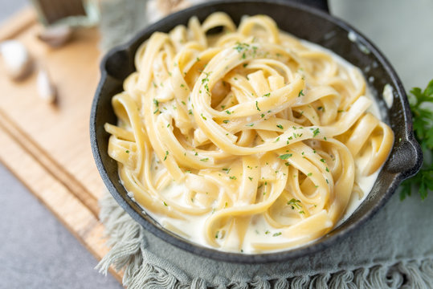

Homepage
Alfredo Pasta

Description
Fettuccine Alfredo is a pasta dish consisting of
fettuccine tossed with butter and Parmesan cheese
which melt and emulsify to form a rich cheese sauce coating the pasta.
Ingredients
- 24 oz dry fettucine pasta
- 1 cup butter
- 3/4 pint heavy cream
- salt and pepper (to taste)
- 1 tbsp garlic powder
- 3/4 cup grated Parmesan cheese
- 1/2 cup grated Romano cheese
Instructions
-
Bring a large pot of lightly salted water to a boil.
Add fettuccine pasta and cook for 8 to 10 minutes or until al dente; drain.
-
Melt butter into cream in a large saucepan over low heat;
add salt, pepper, and garlic powder.
-
Increase heat to medium; stir in grated Romano and Parmesan cheese
until melted and sauce has thickened.
-
Add cooked pasta to sauce and toss until thoroughly coated; serve immediately.